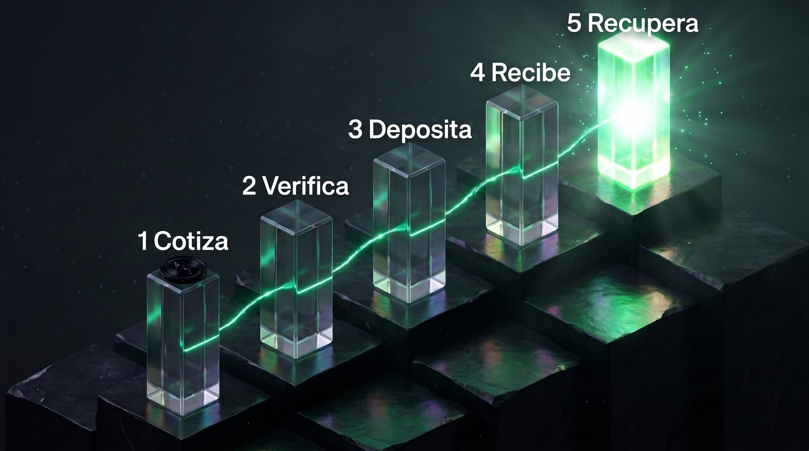
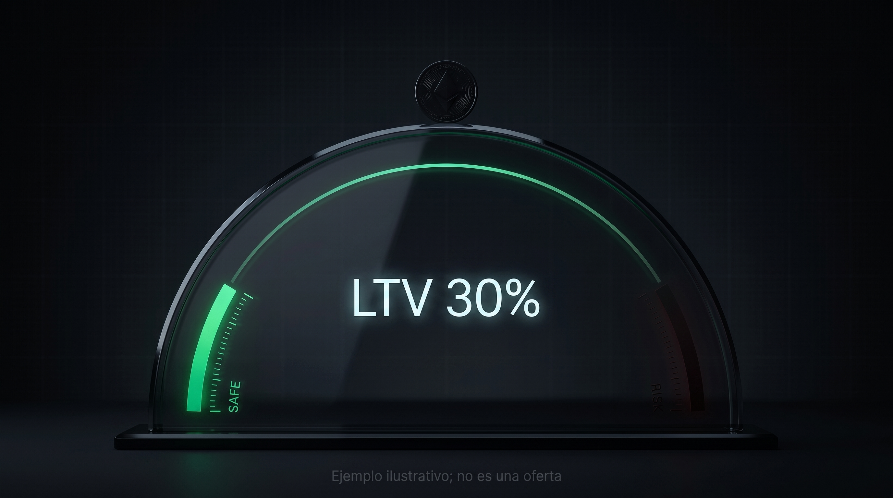

CriptoPrenda · Educación financiera
Préstamo con garantía en Bitcoin: qué es y cómo funciona en México

| Autor | Francisco Salinas |
| Revisión | Legal (Oscar Martínez Nieto o equipo Legal) y Producto |
| Publicación / actualización | 16-oct-2026 / [misma fecha al publicar; actualizar cada 6–12 meses] |
| URL sugerida | /blog/1arantía-con-garantia-en-bitcoin-que-es-y-como-funciona |
| Palabra clave principal | préstamo con garantía en bitcoin |
| Meta title (≤ 60 car.) | Préstamo con garantía en Bitcoin: qué es y cómo funciona |
| Meta descripción (≤ 155 car.) | Qué es un préstamo con garantía en Bitcoin, cómo funciona el colateral y el LTV, cuánto cuesta y qué riesgos debes conocer antes de pedirlo en México. |
| Breadcrumb | Blog / Liquidez / Préstamos / Préstamo con garantía en Bitcoin |
| Etiquetas | Liquidez · Préstamo · Educación |
| Imagen principal | Cripto_prestamo_garantia_bitcoin.webp · 16:9 · 1920 px de ancho · Alt: “Esquema de un préstamo con garantía en Bitcoin: el colateral se resguarda y el cliente recibe liquidez” |
| Enlaces internos | Blog 2 (vender o prestar), Blog 3 (riesgos), blog existente “¿Cómo obtener liquidez…?”, calculadora, página de Preguntas frecuentes |
| Enlaces externos | Banxico · Ley Fintech (Diputados) · CONDUSEF (CAT) [colocar URL exacta de cada fuente] |
| Schema | Article + BreadcrumbList + Person (autor) + FAQPage |
Por Francisco Salinas · 16 de octubre de 2026 · Actualizado: 16 de octubre de 2026
Agréganos a Google como una de tus fuentes preferidas.
Síntesis: un préstamo con garantía en Bitcoin te da liquidez en pesos sin vender tus bitcoins: los dejas como colateral y los recuperas cuando terminas de pagar. El monto que puedes recibir depende del LTV (la relación entre el préstamo y el valor de tu Bitcoin), que en CriptoPrenda llega . Aquí encuentras la definición, el proceso en cinco pasos, cuánto cuesta y los riesgos principales.
En esta guía: 1) Qué es · 2) Cómo funciona paso a paso · 3) Qué es el LTV · 4) Dónde queda tu Bitcoin
· 5) Cuánto cuesta · 6) Para quién tiene sentido · 7) Marco regulatorio · 8) Preguntas frecuentes
¿Qué es un préstamo con garantía en Bitcoin?
Es un préstamo en el que entregas Bitcoin como garantía (colateral) a cambio de recibir dinero, sin necesidad de vender tus bitcoins. Mientras el préstamo está vigente, tu Bitcoin permanece bajo custodia; al liquidar el préstamo, lo recuperas.
Esta lógica es la de un préstamo prendario: dejas un bien de valor como respaldo. La diferencia es que el bien es digital y su precio cambia todos los días, por eso el monto prestado es una fracción de su valor.
¿En qué se diferencia de vender mi Bitcoin?
Si vendes, recibes el dinero pero dejas de tener ese Bitcoin y su posible revalorización. Con un préstamo conservas tu BTC, pero asumes una deuda con intereses que debes pagar. En el siguiente artículo comparamos ambas opciones con números: [¿Vender tu Bitcoin o pedir un préstamo con él?](enlace al Blog 2).
¿En qué se diferencia de un crédito bancario?
En un crédito bancario, el banco evalúa principalmente tu historial e ingresos. En un préstamo con garantía en Bitcoin, el respaldo es el propio colateral, por lo que el proceso se centra en el valor de lo que depositas.
¿Cómo funciona un préstamo con garantía en Bitcoin, paso a paso?
El proceso se resume en cinco pasos, de la cotización a la liquidación del préstamo.
Cotiza tu préstamo. Con la calculadora estimas cuánto puedes recibir según la cantidad de Bitcoin que quieres dejar en garantía.
Deposita tu Bitcoin como colateral. Lo transfieres a la custodia indicada; desde ese momento queda respaldando tu préstamo.
Recibe tu dinero. El préstamo se desembolsa en USDT
Paga y recupera tu Bitcoin. Al terminar de pagar, tu colateral se libera y regresa a tu control.
¿Qué es el LTV y por qué es el número más importante?
El LTV (loan-to-value) es el porcentaje que representa el préstamo frente al valor de tu Bitcoin. Si tu Bitcoin vale $1,000,000 y pides $300,000, tu LTV es 30 %.
Un LTV bajo deja más margen frente a caídas de precio; uno alto te da más dinero hoy, pero tu préstamo pesa más cuando el Bitcoin baja. La siguiente tabla es ilustrativa y usa un Bitcoin hipotético de $1,000,000 MXN:
| LTV al contratar | Préstamo (ejemplo) | Lectura |
|---|---|---|
| 15 % | $150,000 | Más holgura ante caídas de precio |
| 30 % | $300,000 | Equilibrio entre monto y margen |
| 50 % | $500,000 | Más liquidez, menos margen |
| [LTV máximo CriptoPrenda] | [monto] | Máximo disponible |
Ejemplo ilustrativo; no es una oferta ni una cotización.
¿Dónde queda mi Bitcoin mientras dura el préstamo?
Queda en garantía como colateral; no se usa para otros fines.
Esta es una de las preguntas que debes hacer a cualquier plataforma: quién custodia, si el colateral está separado de los fondos de la empresa y si puede reutilizarse. Más abajo y en nuestro artículo de riesgos tienes la lista completa.
BANNER PROMOCIONAL · SIMULA TU PRÉSTAMO
Calcula en minutos cuánto podrías recibir sin vender tus bitcoins. [Texto ≤ 150 caracteres]
Botón CTA: Simula tu préstamo
¿Cuánto cuesta un préstamo con garantía en Bitcoin?
El costo total es la suma de los intereses y las comisiones. En México se compara con el CAT (Costo Anual Total), que expresa el costo del crédito en un solo porcentaje anual.
Estos son los conceptos que debes identificar antes de contratar:
| Concepto | Qué es | En CriptoPrenda |
|---|---|---|
| Tasa de interés | Lo que pagas por usar el dinero | |
| Comisión por apertura | Cobro único al iniciar | |
| Custodia y otros cargos | Costos de resguardo o administración | |
| CAT | Costo total anual, incluye intereses y comisiones | |
| Impuestos | Dependen de tu situación fiscal | Consulta a tu contador |
¿Para quién tiene sentido?
Quien quiere conservar su Bitcoin y necesita liquidez por un tiempo definido, y tiene capacidad de pago.
Quien enfrenta un momento de vida (educación, salud, un gasto inesperado) y prefiere no vender.
Quien quiere capital de trabajo para su negocio respaldado por activos que ya tiene.
No es para todos: si no puedes pagar la deuda o no toleras la volatilidad del Bitcoin, vender puede ser la opción más sencilla. Lo explicamos en el [Blog 2](enlace).
Conclusión
Un préstamo con garantía en Bitcoin permite obtener liquidez sin vender tus bitcoins, pero es una deuda: tiene costo y riesgos. Entender el LTV, la custodia y el costo total antes de contratar es lo más importante.
Si quieres ver cifras con tus propios números, usa la calculadora; y si te quedan dudas, revisa las preguntas frecuentes o escríbenos por nuestros canales oficiales.
Preguntas frecuentes
¿Qué pasa si baja el precio del Bitcoin durante el préstamo?
Si el precio baja, tu LTV sube, porque el préstamo pesa más frente al valor del colateral. En muchas plataformas esto puede activar llamadas de margen o la venta del colateral. [Redactar la respuesta de CriptoPrenda tal como lo establezca el contrato; si el producto no contempla liquidación por movimientos de precio, decirlo con la cláusula exacta.]
¿Cuánto tarda y qué necesito para solicitarlo?
Contar con Bitcoin para dejar como garantía.
Sobre el autor
Francisco Salinas . Máster en Blockchain por ESDEN Business School (2024–2025), con formación en criptoactivos, Web 3.0, identidad digital y blockchain aplicado a banca y fintech. [Añadir 1–2 líneas de experiencia práctica y los temas que suele abordar.]
Este contenido es informativo y no constituye asesoría financiera, legal ni fiscal. Los criptoactivos son volátiles y un préstamo con garantía implica riesgos.
Artículos relacionados: ¿Vender tu Bitcoin o pedir un préstamo con él? · Riesgos y costos de un préstamo con garantía en Bitcoin
Recursos visuales
